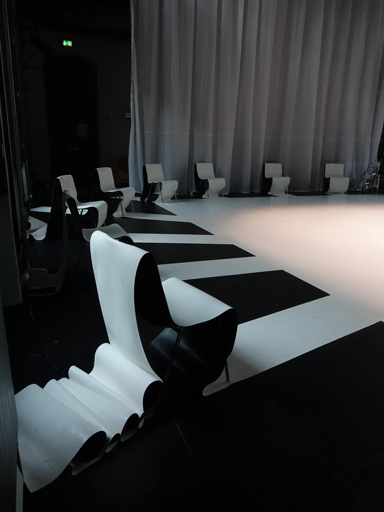
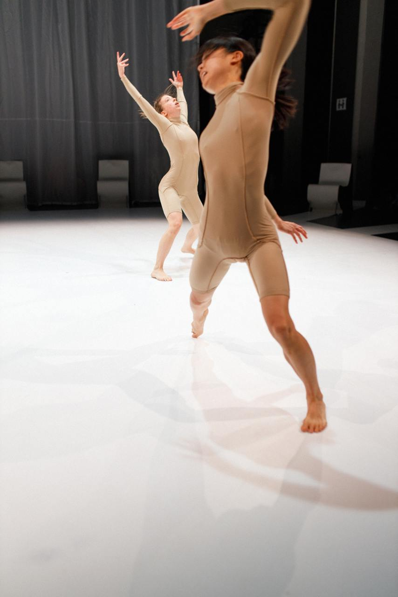
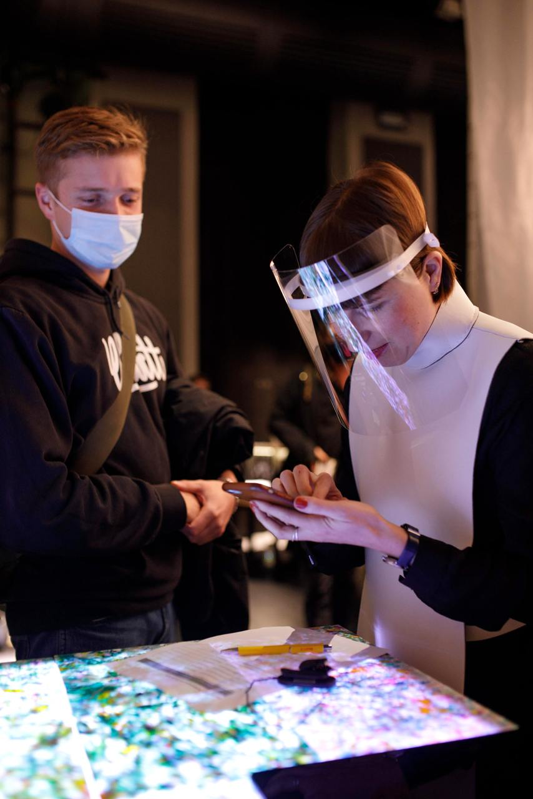

Performance
Panta Rhei
Palucca Hochschule für Tanz im Labortheater HfBK Dresden, Dresden 2020
Die Choreografin Natalie Wagner und die Physikerin Dr. Inga-Maria Eichentopf untersuchten die Wechselwirkung zwischen Tänzerinnen und Publikum. Während der Live Performance wurden die Herzfrequenzvariabilitäten (HRV) der Zuschauenden gemessen, um herauszufinden, wie stark Tanz affizieren kann. Die gewonnenen Daten des Publikums wurden nach der Auswertung für die Weiterentwicklung der Choreografie genutzt. „PANTA RHEI“ ist altgriechisch und bedeutet alles fließt. Dies wurde tragendes Element bei der Bühnen- und Kostümgestaltung. So wurden z.B. hauptsächlich recycelte Materialien verwendet. Außerdem sollte das Bühnenkonzept kompakt verstaubar sein und als Bausystem für weitere Vorstellungen in unterschiedlichsten Räumen dienen können.
- 
- 
- 